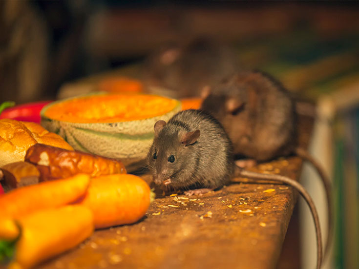
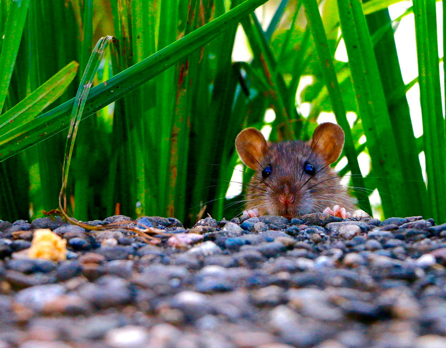
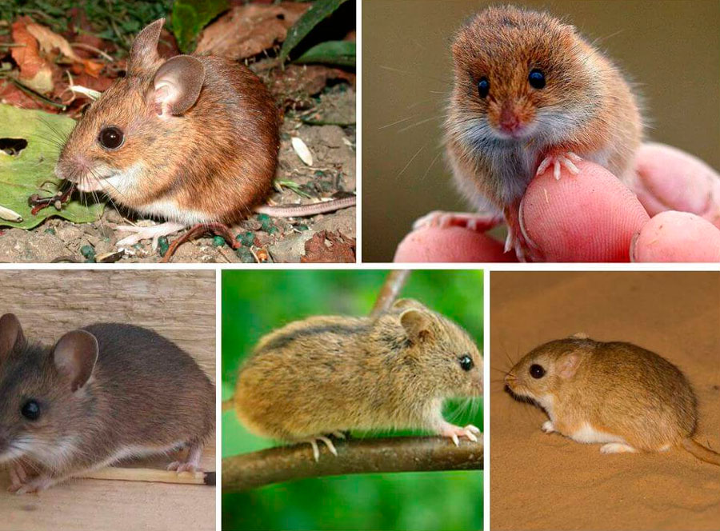

Страница
Мыши относятся к млекопитающим, поскольку они рождают живых детенышей. После появления на свет самка выкармливает свое потомство молоком на протяжении месяца. Каждая самка имеет по 8 сосков. После спаривания самка вынашивает будущих мышат около 25 дней. Через 9 дней после родов она опять может спариваться и опять принести потомство. Каждый раз она может родить от 1 до 12 детенышей. За год она может забеременеть до 5 раз. Популяция грызунов заметно увеличивается 1 раз в 7 лет.
Только что появившиеся на свет мышата не имеют шерсти, не имеют зубов, и они еще не могут видеть. Уже по истечении 1 недели у потомства появляются зубы и начинает расти шерсть, а еще через 20 дней они уже могут питаться самостоятельно. Через 3 месяца молодое потомство способно самостоятельно оплодотворяться, увеличивая популяцию грызунов.
|
Меню

Страница

Страница 1

Страница 2
|